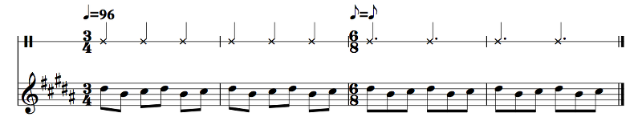
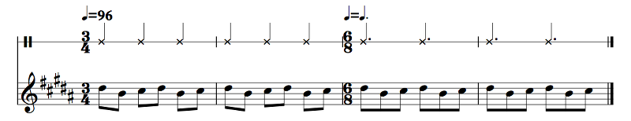
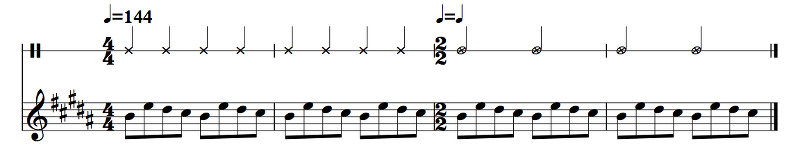

The answer is that you get to pick. Generally the eighth note stays constant:
Example 2.24
But you could make the beat stay constant instead:
Example 2.25
This is denoted with that little expression, quarter note equals dotted quarter note. What this means is that the old thing on the left is the new thing on the right. So, in this case, the old quarter note is the new dotted quarter note; in the previous example, the old eighth note is the new eighth note. This is known as a metric modulation. In Example 2.24, we start at quarter = 96 and end at dotted quarter = 64. While the eighth note stays constant, the beat changes. In Example 2.25, we start at quarter = 96 and end at dotted quarter = 96. The beat stays constant but the subdivision changes. This is also sometimes notated as L'istesso Tempo.
Sure, why not? A metric modulation is a change of meter. Unlike earlier, where we were talking about pieces whose meter changes every measure or just briefly, generally a metric modulation is more permanent; we were in one meter for a while and now we'll spend another while at another meter. (Of course, you don't have to use metric modulations this way.) For example, you could go from 4/4 into cut time (2/2) with quarter note = half note, which keeps the tempo the same, or quarter note = quarter note, which halves the feel of the tempo while keeping the motion the same. Here's an example:
Example 2.26
Oh! Half notes! That's just what X-notehead half notes look like sometimes. Whole notes look the same, but without the stem. Some people actually use diamond-shaped noteheads for half notes instead of these, but this is Sibelius's default.
There's other fun stuff you can do with metric modulation, too. In one of my a cappella arrangements (same one I mentioned earlier about the "now, quickly"), I did a cool thing (well, I think it's cool): I had a section in 4/4, and when it ended, there was a kind of constant beat. I did an accelerando — tempo getting faster and faster gradually — until it was twice the original tempo, and then I did a metric modulation, half note = quarter note, back to the original tempo, but now that constant beat was going twice as fast for the next section. I don't have a recording but it's a cool effect.